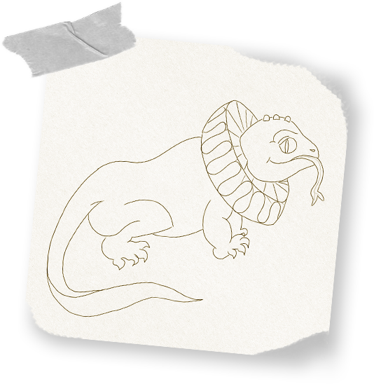
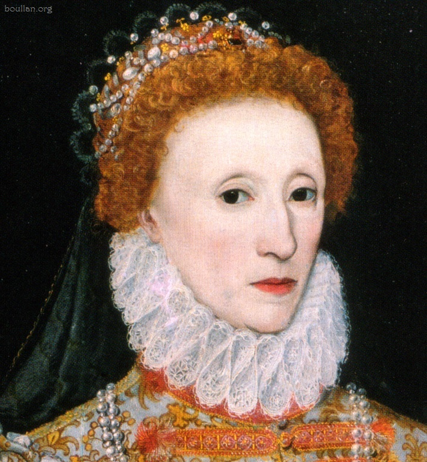

Criatividade, definido no dicionário como inventividade, inteligência e talento para criar - nato ou adquirido -, pode ser compreendida de muitas formas, a depender do seu interesse. Inventar e inovar são alguns dos principais fins da criatividade, quer seja no campo artístico, no científico, esportivo etc.
Alguns a entendem como uma qualidade, uma inspiração divina que é definida pela sorte; outros entendem a criatividade como um exercício diários de reimaginar e analisar novas possibilidades; ainda, há quem a defina como o processo de tapar buracos, corrigir processos e fazer do limão, uma nova limonada.
Independente da forma como se compreende a criatividade, é válido afirmar que algumas pessoas conseguem, através dela, mudar nossa percepção de mundo, seja de nós mesmos ou de nossos parceiros. Algumas pessoas conseguem, ainda, usar a criatividade como um processo que
cria problemas, como armas e processos burocráticos chatos. A criatividade tem muitas formas de chegar até nós.
Tijolinho por tijolinho
E aqui talvez seja uma questão fundamental: para especialistas e trabalhadores da área, o processo criativo é algo que pode ser
construído a partir de processos do nosso dia a dia. Ao andar de bicicleta, olhar para um saco de pão ou olhar para uma linha traçada no muro, o processo criativo pode nascer dali.
Porém, para
Julie Burstein, alguns processos em nossa vida são mais categóricos para o processo de criatividade. Além do já dito “prestar atenção”, a escritora defende que é preciso aprender com nossos momento difíceis, se esforçar para ultrapassar as barreiras do que podemos fazer e, por último, se relacionar de uma maneira mais saudável com a perda e os fins.
Julie Burstein
Em primeiro momento, cada uma dessas propostas podem parecer bobas. Porém, quando colocadas em prática, nos ajudam a compreender o processo de criatividade como uma
construção diária, e não como um dom que nos foi dado. Ainda, estas dicas nos auxiliam a entender que essa construção é o que irá nos permitir trabalhar e desenvolver as ideias que nos aparecerem, que nós tecemos.
Talvez essa seja uma conversa cara. Precisamos aprender a - difícil - lição de que o processo pode tomar rumos que não esperávamos, ou que ele até mesmo venha a ser interrompido em algum momento. Com isso, é muito fácil que acabemos caindo nas falsas fantasias de
"Ah, e se eu tivesse feito...", que podem nos levar a decepções. Ou, quem sabe, a caminhos conturbados, mas recompensadores da energia gasta no dia a dia.
Ao fim,
criatividade pode ser tudo isso e mais um pouco. As vezes, precisamos abrir mão das nossas seguranças (a famosa "zona de conforto"), para que possamos estar voltados a novas ideias e aos processos que podem gerá-las.
Mesmo aquelas que não sejam agradáveis de se ter.
Criando um animal improvável

Este é o
Lagarto Imperial. Ele mora em regiões de grandiosos palácios, apresentando um porte médio - entre 50 e 80 centímetros -. Por conta disso, costuma ser o animal de estimação preferido dos filhos das rainhas.
Em volta do seu pescoço, os lagartos imperiais possuem uma grandiosa estrutura circular que os ajudam a filtrar o ar, antes que este chegue aos seus pulmões. Por essa estrutura ser bastante graciosa, essa espécie virou facilmente alvo dos caçadores, que a extraíam de seus corpos para serem usadas como colares.

"Colar Elizabetano", como passou a ser chamado, sendo usado pela rainha Elizabeth I.
Curiosidades:
- Hoje em dia, a espécie é protegida pelos órgãos de proteção ambiental, pelo seu iminente risco de extinção;
- Apesar de não possuir uma aparência muito amigável, costuma ser um animal bastante dócil. Domesticados, os lagartos imperiais passam a ter hábitos muito vinculados à realeza, como gostar de jogar croquet e tomar chá, todos os dias, às 17 horas;
- Sua estimativa de vida é relativamente alta. Especula-se que a Rainha Elizabeth II (atual rainha do Reino Unido) ainda possua seu lagarto imperial de estimação, que ganhou quando era criança.